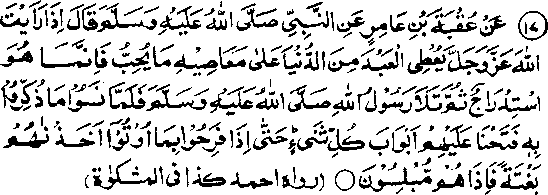

Chapter Six · Section (d): Ahadith on the foregoing subjects (concerning the excellence of Tawakkul)
Hadith 17

Rasulullah Sallallaho alaihe wasallam says: When you see Allah Ta'ala granting abundance to a disobedient person despite his sinful deeds, it may be just ‘Istidraaj’ (a way of bringing him to his damnation gradually). Rasulullah Sallallaho alaihe wasallam then recited the Ayat which means .‘Then when they forgot that whereof they had been admonished. We opened unto them the gates of (abundance in) all things till, even as they were enjoying that which they were given, We seized them unawares and Lo! they were stunned’.
Note: The Ayat cited in the Hadith occurs in Surah (al-An‘am: 44). The preceding two Ayaat briefly described how Allah Ta'ala treated the past generations of mankind. A brief translation of these Ayaat is given below:
"And Rasuls of Allah visited the peoples in the generation before you, (but they denied them) and We inflicted upon them tribulations and diseases (and other afflictions) in order that they might grow humble (but they persisted in evil behaviour). It only, when any adversity fell on them, they had repented, wept and cried unto Us (We would have forgiven them their sins); but their hearts remained hard as ever and the Shaitan made all that they used to do, seem fair unto them! Then, when they forgot that whereof they had been warned, We opened unto them the gates (of affluence) in all things. So they felt proud of their excessive wealth rejoicing in their luxuries. Then, We seized them with an unexpected punishment and lo! they were stunned! So (with this sudden punishment) the last remnant of the people who did wrong was cut down. And praise be to Allah, the Lord and Sustainer of the worlds (for having finished the last remnant of the wrong-doers)". (al-Anam: 42, 43, 44, 45)
In this Hadith, Rasulullah Sallallaho alaihe wasallam has admonished us not to envy the evil-doers, if we find them in affluent circumstances in spite of their disobedience and indulgence in sins. For, in this manner, the transgressors are driven, gradually, to ultimate damnation. This state is a kind of latitude or ‘Istidraaj’, as mentioned in these Ayaat There are many other Ayaat in the Holy Qur’an on ‘Istidraaj’ which forewarn men against such circumstances. Indeed it is a very dangerous situation, for the sinner is suddenly seized with the punishment, amidst his rejoicing, and he is too bewildered by being suddenly overtaken by his misery to find any means of escape. One should, therefore, be on one’s guard against such dangerous situations.
Ubaadah Radhiallaho anho reports Rasulullah Sallallaho alaihe wasallam as saying, " When Allah Ta'ala wills that a community should prosper and grow, He grants its members the qualities of moderation and chastity; when He wills to destroy a community, a door to dishonesty is opened for them and, when they begin to rejoice in their dishonest deeds, He seizes them unawares, with punishment". He then recited the Ayat (44) quoted above. Hasan Radhiallaho anho says: "He who finds himself in affluence but does not deem it to be foreboding his doom, is not a wise man; and he who finds himself in straitened circumstances but does not consider it opportune for turning to Allah Ta'ala in repentance, is not a wise man, either". (Durre Manthur) r.
A Hadith reports Rasulullah Sallallaho alaihe wasallam supplicating Allah Ta'ala, thus: "O Allah! Grant less wealth and fewer children to him who believes in me and in the truth of the Commandments revealed to me, and grant him, a strong desire to meet You-As for him who does not believe in me and in the truth of the commandments revealed to me, grant him O Allah!, Abundant money and numerous children; and decree for him a longer life". In any case, if a person is being granted excessive bounties in spite of his persistence in disobedience to Allah Ta'ala, he is in a very dangerous situation. Such a one should repent, beg forgiveness of Allah Ta'ala and turn to Him. For the same reason, Rasulullah Sallallaho alaihe wasallam has warned his followers not to feel envious of a wicked person for his enjoying any bounty of Allah Ta'ala; they should know that miserable is his Cate after his death. (The text of the Hadith has been given above, under Hadith XVI.